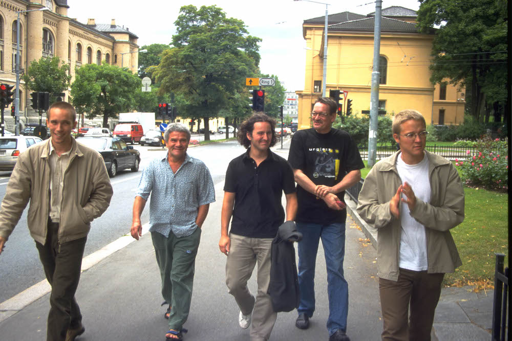

For Olim
1. Ab Baars
For Olim
"An amazing combination of intuition, vehemence, knowledge, skills, courage, necessity, elegance..."
My painting is inspired by the solo album I bought in the late eighties and have been listening to ever since. Getting back to it is like a book of poetry that stays with you all your life: reading re-reading, listening re-listening, memorizing it. Noticing new elements each and every time. Finding inspiration again and again. The wind, the wind...
It inspires my music, my way of developing material: starting with the smallest element, a cell, one note, two notes. Looking at it from all different angles, transposing it, turning it upside down, playing it backwards, turning it around, letting it rest for a while, incorporating new elements, combining, building; a construction.
Cecil Taylor For Olim (Soul Note SN 1150, 1987)
An amazing combination of intuition, vehemence, knowledge, skills, courage, necessity, elegance... Astonishing. Bewildering
The painting For Olim was made in 2018, a free association of what I heard and felt (acrylic on paper 420x300)
More from Ab Baars
2. Ig Henneman
Oxford Lace Up
"I could not resist to find out if 'the organ shoe' does exist"
Two months ago, I was invited by the Orgelpark Amsterdam to program a composer's portrait for my 75th birthday in 2020. I have been thinking about composing for organ for a long time and now I have the opportunity to take a real dive into the organ music and the unique world around it: to write an organ piece and make arrangements of earlier work that also involve the organ.
The Orgelpark is an oasis of creativity in this world where art is pushed to the margins and seems only of value when it raises a big audience and big money. This is a venue where almost everything is possible. Improvisation plays an important and organic role in the organ world.
My first encounter with the organ was as a little girl, leaving church after mass. I loved the sound coming from the organ high above; the moment of improvisation for the organist who sometimes made the building shiver on its foundations. I never figured out what was happening up there. In a YouTube video, I see what was invisible to me at the time. The organist and her helpers chatting during the end of the mass and then at the moment suprême she starts a beautiful improvisation on the organ in the church of Saint-Sulpice, Paris. The organist is Sophie-Véronique Cauchefer-Choplin
Years later, I got to hear the organ in a more personal way. Being a composer/improviser and an outsider in the organ world, I got a commission to write a theme for the prestigious biannual International Organ Improvisation Competition in Haarlem (NL). First in 1998 for the 2nd round, and in 2008 for the final round, both on the famous Müller Organ in the St Bavo church. Because of this commission I was allowed to play this instrument myself. What an impressive experience it is to feel the acoustics of the building by simply touching a key of the manual or put a foot on a pedal tone, to feel the power of this colorful 'orchestra' was overwhelming. During these competitions I heard my theme's being played by different organists. The improvisers received the theme only one hour before their concert. Some tried to get back to their known terrain as fast as possible, others really explored the aspects of the themes I offered.
Organists are a special species in the world of musicians. From the very beginning they are educated to improvise, in different styles, and as performers they are totally dependent on the possibilities and the condition of an instrument that represents an 'orchestra'
Organists are a special species in the world of musicians. From the very beginning they are educated to improvise, in different styles, and as performers they are totally dependent on the possibilities and the condition of an instrument that represents an 'orchestra'.
They absolutely need a lot of compositional and improvisational skills to make it work. Composers who write for organ are mostly organists themselves. To me some organ compositions seem like well balanced improvisations.
-
By way of illustration I like to mention some video's that I enjoyed looking and listening to and that give a good impression of what I talked about earlier. The German organist Ansgar Wallenhorst I recently discovered, improvises beautifully on a theme by Jean Guillou (11:03). I love his clear language. Motivic improvisation, I call it. And that's exactly what I like to do myself as a composer/improviser.
And the French master Jean Guillou himself shows us the colors/instruments of the organ while improvising (5:02)
To see the pedals used in a virtuosic way I found the Flight of the Bumblebee on the organ pedals, played by Carol Williams (2:21) in the Cadet Chapel at West Point, NY
And of course "Messin' about with the Blues": Thomas "Fats" Waller playing on the Estey Pipe Organ (3:18) in the Trinity Church in Camden, New Jersey
And what about Oxford Lace Up? Since I have fancied shoes my whole life, I could not resist to find out if 'the organ shoe' does exist, and yes, you can find them online, from Massachusetts: Organmaster Shoes -The right shoes on the pedals - in different shapes: 'Oxford Lace Up' in black for Men's & Unisex, for women in silver and gold the 'Diana', and the 'Mary Jane' in black or white. If you would like to admire the Dianas in gold, go to look for organist Diane Bis playing the fascinating Marcel Dupré composition Symphonie - Passion Op. 23 (1922-1924) in the church of Roswell United Methodist church in Georgia, on the Molder organ with 5 manuals and 5.000 pipes (9:18). This composition is a good example of a composition that sounds like stretched out improvisations on simple motives. https://youtu.be/gtC8DVP8dnU
I am very excited to continue working on the program for my composer's portrait that will contain both my composed as well as improvised work. Musicians: Ab Baars on shakuhachi/clarinet, Lidy Blijdorp cello, Ig Henneman viola/compositions, Annelie Koning voice, Anne La Berge flutes/electronics, Gerrie Meijers organ and more to come. If you happen to be in the neighborhood, Amsterdam 11-22-20 come have a listen!
3. Mats Gustafsson
Sun Ra
The individual voices are the fundamental. But it is all being kept together by Sun Ra himself. Like a queen in a beehive of free music -- creativity and life.
SUN
sun ra
his story
my story
my stery
mystery
RA
One of the first musicians practicing DIY. Sun Ra. Sonny. Sunny. Le Ra, Herman Blount. With his Saturn Records. With his Arkestra. With his Arkistra. With his Saturn Research. The only other company doing something similar- from a DIY perspective- back in the 50´s, is perhaps Debut Records, founded by Charlie Mingus and Max Roach.
But the music and the visions that Herman Sonny Blount was aiming for were different. He rewrote the history as we know it. Sun Ra starts off inside of the history. His-story. The history of jazz. The history of a utopian Afro-American dream and vision. The history of mankind, constantly transformed via Egyptian metaphors and terminology as well as black magic and outer space visions. These unique self-made visions and wisdoms became reality for the members of the Arkestra. It is quite spectacular and slightly surprising that so many members became loyal through the years and stayed in the band until the end. One interesting parallel is the Duke Ellington Orchestra, where all the members stayed all the years with their bandleader. Perhaps one of the reasons is that both Duke and Ra used their individual members in such a prolific way. Giving each single voice enough space in the collective. Using their personalities and individual characters to build the sound of the orchestras. This is something to learn from. Dedication!
What the Arkestra symbolizes is unique. In a world of egocentric behaviors, short sighted benefits and career-based strategies… it's quite extreme with a collective of musicians that gathers around the same ethics and moral!
Life long.
The music that Pat Patrick, John Gilmore, Michael Ray, Robert Barry, Marshall Allen Danny Thompson, June Tyson and others made within the Arkestra is something of highest poetic beauty. Free, creative, open but always with one foot in the history bucket. The jazz history bucket.
"He rewrote the history as we know it. Sun Ra starts off inside of the history. His-story. The history of jazz. The history of a utopian Afro-American dream and vision. The history of mankind, constantly transformed via Egyptian metaphors and terminology as well as black magic and outer space visions. These unique self-made visions and wisdoms became reality for the members of the Arkestra."
For a discaholic such as myself, the discography is a nightmare as well as a wet dream. Is it possible to access a complete collection of Saturn releases? Is it a realistic idea? A Swedish friend of mine DOES have a complete collection… I kid you not – it is complete, and I have touched it… I have smelled it… I have seen it… complete! YOU DIG? All vinyls, all 78s, all poetry books, all cassettes, all CDs, all boots… everything! But, that is the charm with such an (almost) impossible task. It is the path, the road (as Derek Bailey used to say) that is important. Not the goal. Not to complete the collection. But to go looking for the objects, for the music. The search. The Research. And to long for the objects. Imagining the music. The same thing goes for the Swedish label Bird Notes, founded by sax player Bengt Nordström in 1962. Small editions with handmade labels and a very confusing number of releases by Albert Ayler, Don Cherry and all the earliest Swedish Free Jazz- related players and artists. And most of all Bengt Nordström's own solo excursions, yeeeearrs before Braxton and others… Saturn and Bird Notes. Highest on MY list! DIY!
Saturn Records (Saturn research) became one of the most important labels all time for creative music. The music that was released in the 50s, 60s and 70s by Sun Ra and his companion Alton Abraham are pure magic. In its free approach, in its open form. The 80s and 90s meant perhaps that the Arkestra started to repeat what was done before. The recipe became a standard. The main course became predictable. But, we can accept that with a smile. The early experiments in form and structure, new sounds, electronic instruments, weird string instruments and space drums are mind-blowing.
The individual voices are the fundamental. But it is all being kept together by Sun Ra himself. Like a queen in a beehive of free music -- creativity and life.
The vinyl and the poetry that was published back in the day makes my knees soft, my breathing irregular and starts making sweat gush out in large quantities… Releases with silkscreen prints, “shower curtain covers” and hand painted covers as well as handmade labels and related activities. Small editions that were only for sale at concerts or at the home base of the Arkestra, be it Chicago, New York or Philadelphia. Some of the editions only exists in a handful copies. Especially the early EPs. The first ever release by the Arkestra is ”Saturn”. A 7” piece of vinyl with a golden label, hitherto only known in 3 existing copies. One is in the private collection – mentioned above- in Sweden and another copy is in the Discaholic archives in Nickelsdorf, Austria. The third copy is housed in Chicago. Transported by (yours truly) discaholic courier in 2017 – traded for a copy of Tom Prehn´s Axiom LP from 1963 on the Danish Sonet label. A mythic record that only exists in two copies(!). Yes. As sick as that fact is… With a real cover and real printed labels. But not properly released on vinyl until 2016, when Rune Grammofon released it. The second release on Saturn was the Super Blonde 45 that was released right after “Saturn”. A very common piece of vinyl… 5 copies are known worldwide. Dream or nightmare? Mystery or history?
After starting his musical path with Fletcher Henderson, Wynonie Harris, Red Saunders, Billy Brooks, Dorethy Donegan and a variety of blues and doo wop groups in the Windy City, Ra came up with his futuristic visions. And started to realize some of them. Using the collective as the fundamental for it all. New perspectives, new ways towards a new time, a new world.
You can’t sit still and wait for things to happen. You need to grab the bull by its horns and let your creativity lead the animal in the right direction(s).
DIY. You need to do things yourself, if something shall change or/and develop, on all levels and layers. That is what has inspired me the most with Sun Ra! You can’t sit still and wait for things to happen. You need to grab the bull by its horns and let your creativity lead the animal in the right direction(s).
Ra´s acting and doings are special. With its deep social pathos and dedication, locally as well as globally. It is easy to be misled by the spectacular esthetics and the wild space symbolism of Ra, with its connections to black magic and mysticism. But if you listen, between the grooves of the vinyls, between the layers of poetry – you will find an attitude towards life that in all ways possible affect us as musicians, artists and human beings.
We (always) have a lot to learn.
Mats Gustafsson, may, 2014 – for thevinylfactory.com (extended version for CQ #6, revised in June 2019)
More from Mats Gustafsson
4. Paal Nilssen-Love
Excerpt from Liner Notes
Excerpts from liner notes by Paal Nilssen-Love from upcoming 5CD box on PNL records.
The Quintet “Events 1998-1999” Carl Magnus Neumann, Bjørnar Andresen, Ketil Gutvik, Eivind Opsvik, Paal Nilssen-Love
During a phone conversation with Ketil Gutvik in November 2018, we happened to talk about Quintet, and the album we did together. We suddenly realized it would soon be 20 years since the band’s existence and the release of that one CD. I said I’d take on the job of releasing the CD again on my own label. We also agreed that we should get hold of the studio recording we made for NRK radio that same year. I suggested to Lasse Marhaug, who does all my cover art and sometimes co-produces and mixes my albums, that I wanted to make it a double CD, or two separate volumes with the two recordings. He immediately suggested a box set with the two CDs plus a booklet with photos and texts. But at the same time, he asked if there existed any more recordings of the band. Before we started searching out more recordings, Ketil and I agreed that we should approach Oslo Jazz Festival and check if they would to do a record release concert with Calle. Fact is, the Festival’s August 2019 edition would take place almost 20 years to the day after our concert at Blå during Oslo Jazz Festival 2009. The festival immediately said yes and, like me, they were curious to know if Calle was still active. I hadn’t seen or heard from him since our final concert at Dølajazz in October 2000. I found his phone number and, after several calls and texts, he got back to me. Calle was thrilled to hear I was going to reissue the album and also the NRK tape. Not least, he wanted to do the concert and promised to find a rehearsal space and start practicing his alto sax again.
Were there more recordings with the band? Ketil keeps many things, including all his old diaries (in this case, a Filofax). He searched through the years 1998, 1999 and 2000 and actually found the dates of our first rehearsal and all following events. He also claimed that the very first rehearsal was recorded on Peter Opsvik’s Tascam recorder and mixed down to a DAT tape, and luckily, he soon discovered he even had two CD-Rs containing this recording. Not only that, he also found the NRK recording plus a concert we did in Bergen.
Scared of having CD-Rs with loss of sound, he immediately transferred them to his computer and sent all the files to Lasse and myself. We discovered that the music was great and that the recordings were in very good condition. Discussing Ketil’s Filofax of concert dates, we both began to recall even more recordings that we had made. We contacted Eivind Opsvik, and within a few days he sent us a photo of a DAT containing the recording of our concert at Blå during Oslo Jazz Festival, 14 August 1999. Secondly, I found another DAT with the recording of our last concert at Dølajazz, October 2000. Lasse had loaned out his DAT machine, so we had to wait several weeks before we could find out if the Oslo recording was worth putting out. Both Ketil and I recall the gig at Dølajazz coming after the band’s peak, so we were both anxious to hear the Oslo tape. While we were waiting for Lasse’s DAT machine to show up, I began to contact various photographers I thought had been at the shows. The concerts all happened in 1998-99 and 2000, and since this was before the arrival of digital cameras, I knew the job of finding photos would be just as tough as digging out the recordings – if not more. I sent out numerous emails and made phone calls all over the place, trying to get a lead. It turned out that some photographers had passed away, some were ill (mentally or physically), and that various film rolls of photos taken at different concerts were either tucked away in a box in some office or lost somewhere in an archive which no one seemed to have access to. In the end, we had access to three complete rolls of film from two different photographers who had archived them, and four more photos – some from a retired photographer, the others from one who had passed away. There is still one roll of photos we know about, but this seems to be tucked away in a box in some festival office. In the end, we managed to get our hands on much more material than I thought we would. It couldn’t be better. We ended up with music good enough for five CDs and about 40 photos, liner notes, interviews and all.
During the process of research, I discovered many facts about the Norwegian jazz scene that I wasn´t aware of. By interviewing Arild Andersen, many timelines were brought together and he gave me even more information and stories about Bjørnar and Calle.
Early on while assembling all the material, I realised this was our one chance to document the band’s existence and I was determined to make the most of it. But why release music by a group that only lasted for one year, twenty years later? Firstly, there are not many recordings of Calle or Bjørnar in existence. This group was not just their comeback, but also featured them joining forces with a younger generation of musicians. It was a band that improvised freely, without any rules or prescription of where the music should go. That said, during the band´s first rehearsal, the identity of the group was in fact set, but one also knew that many doors were ready to be opened. This box set is released in connection with yet another comeback for Calle. At the time of writing this text, The Quintet is due to perform at Oslo Jazz Festival on 13 August 2019.
Paal Nilssen-Love

More from Paal Nilssen Love
5. Ken Vandermark
Musicians
1.ALAN DAWSON When I was a young teenager in the late 1970s/early 1980s, my father would sometimes take me along for interviews of Boston area musicians that he did for a now defunct jazz/improvised music magazine, ostensibly to run the tape recorder while he talked to the artists. On one of those occasions he talked with the legendary drummer and teacher, Alan Dawson. During the course of the discussion, Dawson recounted seeing Sonny Rollins on a gig with a local drummer whose name I can no longer remember. The drummer was apparently great, but had brought along a worn out drum kit to play the concert.
The first tune Rollins called was blazingly fast and toward the end of the piece he started trading eights with the drummer. On the first exchange, the percussionist put his stick through the top of the snare drum. Still holding tempo, he was able to flip the snare drum over by the time he had to play his second eight and could use the bottom head, but things proceeded to deteriorate over the course of the trades, which quickly ratcheted up to switching four bars each. Though the drum set continued to come apart during the course of the performance, the drummer never hesitated, and kept finding solutions that let him carry the improvised exchange forward with complete force. "I never forgot that," said Dawson. "You can always find a thousand excuses to fail, but there is only one reason not to."
-
2. PAUL LOVENS In November of 1995, after a day of recording in the studio with the instrumental soul/funk band, the Crown Royals, I ate some bad Thai food and got the worst case of food poisoning in my life. Two days later, I was still so sick that, while playing a concert with the NRG Ensemble at a club called the Bop Shop, I couldn't stand and had to play from a chair. Halfway through our set, Evan Parker, Peter Brötzmann, Paul Lovens, and Peter Kowald- who were in town for the "FMP Visits Chicago" festival- walked in and sat down to listen to the band. It was like living my worst nightmare.
A couple of days after that, still not able to keep anything down but water, I was scheduled to play a short duo set with Paul Lovens on a program of mixed groupings of Chicagoans and Europeans that took place at Goodspeed Hall. For five days previous, I had laid in bed listening to nothing but recordings with Paul playing the drums. When the point in the program came to our set, I was the most nervous I'd ever been, before or since. For some reason, it seemed like a good idea at the time to bring both my tenor and clarinet onstage, despite the fact that we were only going to perform for about ten minutes.
Taking the added precaution of bringing extra reeds with me, I realized I had no free hands to carry them, and put the boxes in the bell of my saxophone. I had been so focused on Paul's playing that when he started, I doubled his opening improvised phrase in perfect unison- he looked at me with real surprise while I just wondered why my saxophone felt like it was stuffed with socks. There was no time to really consider this because the music took off and I needed to run with it.
After a few minutes of playing a light went off in my food deprived brain- the reeds were still inside the bell of tenor. During a brief pause in the music's trajectory I pulled the boxes out and tossed them on the floor, my sound liberated. I felt well for the first time in days. Afterward, someone in the audience came up and said to me, "Wow, that was so cool the way you planned to start with something stuck in your saxophone and then suddenly pulled it out so it got louder!"
-

3. FRED ANDERSON Traveling and playing with Fred Anderson was a special and beautiful experience, filled with unexpected humor. Once, after playing a festival in northern California with Fred, Kent Kessler, and Tim Mulvenna, we had dinner together at a restaurant near our hotel. Fred had a Caesar salad and asked me what kind of lettuce it was. I told him that I was pretty sure it was romaine. "It's really good- can I get this in Chicago?" I said yes, I'm sure he could. "Great!" The four of us were driving in a van to another gig sometime later and Fred was fast asleep. Lester Young's album, The Complete Aladdin Sessions, was playing on the stereo. Fred woke up in the middle of one of the tunes and immediately began humming along with Lester Young's solo, "Yeah, I remember when this came out and heard it on the radio the first time." A couple of years later I was again having dinner with Fred after a concert. He was eating another salad and I asked him if it was as good as the one he had had in California, "No- that was the salad of a lifetime."
In 1999 I traveled with Fred to Graz, Austria to play at the Steirischer Herbst Festival. The night we got in, all of us and a number of the other festival participants were invited to a big dinner. Fred was exhausted from the flight and promptly fell asleep, sitting upright in his seat. The person next to me, wearing pants with suspenders and a straw Boater hat, enthusiastically introduced himself, "Hi! I'm Tony Conrad- and who are you?" I had studied Tony Conrad's films while in college but had never met him and was a bit starstruck as I told him my name.
He asked me what I was doing at the festival and I told him that I was playing with the DKV Trio, Fred Anderson, and Mats Gustafsson. "Fred Anderson?!! Is he here?!!" I told him yes, and that he was sitting just down the table. Tony Conrad jumped up, reached across the table to shake Fred's hand, who was still sleeping, and shouted, "Fred! Fred Anderson! It's me- Tony Conrad!" Fred opened his eyes in surprise and looked up, "Alright Tony!" And fell right back to sleep.
-
4. GETACHEW MEKURIA Terrie Hessels invited me to work on the Getachew Mekuria recordings with The Ex & Friends that became the album Y'Anbessaw Tezeta during December of 2011. It was the most humbling musical experience I've ever had. Terrie sent me original Ethiopian recordings and Getachew's melodies that were to be the basis of the project, and I transcribed them while on the road. I arrived at Terrie's place in Wormer, Netherlands feeling prepared for the first rehearsal but I was very, very mistaken- every phrase I had written down was incorrect. That initial day the rehearsal was recorded and when we got back to Terrie's, I spent the evening re-writing my parts (The Ex seemed to have everything right, and I was the first of the horn players to arrive).
The same thing happened the next day. And the next. I realized that Getachew was changing the musical statements to fit his frame of mind at the time of performance, they were as similar but as different as delta blues verses can be for the same song.
Each morning I'd be sitting at the breakfast table, trying to finish up my newest transcriptions, while Getachew sat across from me, glaring, then looking at Terrie, then back at me, shaking his head in disbelief.
Things got a better when the other horn players arrived, particularly clarinetist, Xavier Charles, whose musicianship and understanding of the material was awe inspiring. But, putting it mildly, I had my ass kicked. Three years and many concerts with Getachew and The Ex & Friends later, in October of 2014, I was playing with most of the same group at the Ethiopian National Theater in Addis Ababa, equivalent to playing with one of the most famous musicians from the United States at Carnegie Hall. When people ask me what I feel is my most significant concert, I tell them this one. When the musicians arrived in Addis to start rehearsing with Getachew, his diabetes was so bad he couldn't really stand or walk very well and he looked extremely frail.
His tenor sound was totally there, though, and as the week progressed his playing and physical strength just got better and better. If I ever needed to be convinced about the healing force of music, this was it. The last concert I played during those days in Addis was in an improvised trio with Endris Hassen (masenko) and Misale Legesse (kobero) at the Alliance Ethio-Française, as part of an afternoon concert program involving many musicians from Addis and members of The Ex & Friends. After our performance, Getachew- who was sitting by the side of the stage- stood up and hugged me. It remains my proudest moment as a musician.
"Each morning I'd be sitting at the breakfast table, trying to finish up my newest transcriptions, while Getachew sat across from me, glaring, then looking at Terrie, then back at me, shaking his head in disbelief."
-
5. ANTHONY BRAXTON Getting older meant needing to get glasses to be able to read, both books and music. The first time I used them onstage was for the initial duo concert with Nate Wooley, which took place in Hartford, Connecticut on October 2nd, 2013 for a concert series organized by Joe Morris and Stephen Haynes. Five minutes before our set was going to start, Joe ran backstage and said excitedly, "Braxton's here! He never comes to shows- it's incredible that he made it!"
but whose words of support in early 1992- when I snuck into a master class he was presenting at the University of Illinois Urbana-Champaign where he listened to a cassette tape of music I played at a gig with Brian Sandstrom (bass) and Damon Short (drums) at Southend Musicworks that my partner, Ellen Major, encouraged me to bring- gave me back my self confidence after two years of rejection and discouragement following my move to Chicago from Boston in late 1989.
"someone whose words of support in early 1992 gave me back my self confidence after two years of rejection and discouragement following my move to Chicago from Boston"
So now- not only was I faced with playing the first show with a brand new project, premiering a set of difficult material, dealing with glasses that made it possible to read the charts but put everything else around me out of focus- I just found out that I was going to play with one of my biggest heroes in the audience, someone who not only transformed the languages and possibilities for the instruments I play and completely altered conceptions of composition for improvisers and ensembles,
Knowing Anthony Braxton was in the audience brought back the fear I had felt before going onstage with Paul Lovens nearly 20 years earlier. When I introduced one of my compositions at the beginning of the concert with Nate, I said something about feeling self conscious because of wearing glasses in front of an audience for the first time. Off to my right I heard an instantly recognizable voice shout out, "Looking good Mr. Vandermark!"
-
6. BILLIE HOLIDAY One evening in the late 1990s, most likely after one of the weekly Vandermark 5 concerts at the Empty Bottle, which were held every Tuesday night for several years, I was flipping around T.V. stations looking for something to watch while I tried to fall asleep. It still takes hours for me to come down after a performance, and at that time I would almost always stay past closing after a Bottle show, still wide awake after getting home. I came across a black and white broadcast of a woman singing with a terrible jazz band, probably shot in the late 1950s. After watching for a moment I realized, beyond belief, that it was Billie Holiday. The concert must have taken place in the months just before she died, on July 17th, 1959.
She was a skeleton, her voice was completely gone, making her broken but beautiful vocals on Lady in Satin sound like the late 1930s performances with Lester Young in comparison. Even her timing was gone, the band dragging her further down. I remember that it was filmed at a club date somewhere, the audience at tables near the front of the stage not paying attention and talking to each other. To see and hear one of the musical geniuses of the 20th century in such circumstances was beyond tragic, her power and pride a shell of what it was. I felt my heart break, and was about to turn the television off when Billie Holiday- her instrument and energy damaged beyond repair- suddenly found a way to sing. It was impossible but it was true and it moved me to tears.
-Ken Vandermark, May 31, 2019//Wormer, Netherlands
More from Ken Vandermark
6. Terrie Hessels
Ethiopian Cassettes
Between 1969 and 1978 were the golden years in Ethiopian music. Loads of bands, singers, instrumentalists. Most of them coming from the ‘official’ big bands under the Haile Selassie regime. During the day in these orchestras; at night going wild in the clubs and bars. It was the introduction of vinyl too. An enormous selection, but most of the time not more than 500 copies each. Record players were rare.
After the fall of Haile Selassie a communist military dictatorship took over. Records disappeared quickly. But cassettes took over. Easy to make, copy and distribute. The amount of releases exploded. Editions of ten-thousand were not an exception. It was a brutal regime, but somehow music stayed very independent and untouchable for the government. Singers like Mahmud Ahmed and Tilahoun Gessesse were really much more influential then the cheap regime propaganda.
The first time i went to Ethiopia, in 1996, there were still plenty of cassette shops. Most of them had a wide selection of music on reel-to-reel tapes and could make you a copy on demand. Emma Fischer and I got hundreds. Still incredible stuff. Hard to find these days.

MAHMOUD AHMED — All by Mahmoud Ahmed. In 1996 he still had a cassette shop himself. We went there and he was even behind the counter! We bought everything of his! Amazing selection of then completely unknown material.
AYALEW MESFIN — The reel-to-reel copies of the old Police Band music, with singer Ayalew Mesfin, who also had a cassette shop. The cassette player he used was a bit old. When we listened to the copies later in the car, there was only a low, rumbling sound. We are not too critical, but for this we went back. He put the cassette in the machine and just started singing along very loud and enthusiastic. We gave in right away! Most of the stuff was incredible anyway.

GETACHEW MEKURIA — Here we also got the copy of the first Getatchew Mekuria cassette, later Ethiopiques 14. We were flabbergasted and the whole story of The Ex & Getatchew started from this cassette.
TILAHOUN GESSESSE — All we could find of Tilahun Gessesse, probably the most popular singer of all. But very original. Super strong voice. Lots of double meaning and unexpected moves. We saw him one time live, at the end of his career, unable to walk anymore, in a full National Theatre in Addis. He started and literally all 1500 people started crying right away. Unbelievable impact.
ZERFU DEMISSIE — We were walking on the big market in Addis and heard a weird low rumbling sound. We went into the cassette shop to ask what it was. The guy took it out of the machine and gave it to us as a present right away! It was Zerfu Demissie playing the begena, the big 10 string harp of King David. Orthodox Christian music, but full of movement and emotion. We invited Zerfu later to Holland and even for a tour with The Ex in France. Great, unlikely combination!
BAHRU KEGNE — Some great Azmari music. Azmaris are a kind of minstrel, commenting, joking and taking the piss out of everything. We discovered legendary musicians like Abebe Fekade (the first Ethiopian staying in our house), Chalachew Ashenafi and Bahru Kegne, who both had releases on Terp Records.
WEDDING SONGS — Wedding songs. Wedding songs are definitely the most wild and punky of all Ethiopian music. There are loads of Wedding cassettes. Hard to choose, because it’s not about the singer’s name or fame. But all of the recordings are exciting!
HIZUT BEHELE — Hirut Bekele & Busunesh Bekele. They are not related. Two of the legendary woman singers. They have a few tracks on the Ethiopiques series, but both more than a dozen cassettes, from big orchestra recordings to small simple releases. All amazing. Buzunesh with a sharp high-pitched voice and Hirut with her softer, melodic vocals.
THE EX — The Ex. Ok, ok. When we did the tours in 2002 and 2004, we released two special Ethiopian cassettes. The second one with us playing our favourite Ethio songs. We sold a few, but most we gave to taxi-drivers who played it in their cabs. Good promotion, haha!
— MELKWEG CONCERT. In 1987, after the "We Are The World" Bob Geldof shit, Ethiopia thought ,"We can do that as well and better!" They sent all the great artist to some European stages. The musicians were super excited, although they had to cope with a big group of soldiers from the communist dictatorship accompanying them. I have a cassette from the Melkweg, Amsterdam concert- legendary. All the stars were there. They made a plan of all singing one song each, alternating. Tilahoun was first. The audience, with many Ethiopians, went completely crazy. And after he stopped, Tilahoun didn’t really know what to do. With such big applause it seemed not a good idea to give the microphone to someone next. He hesitated and started the same song again! Amazing musical moment. The concert was also special in that it was the first meeting of Mahmud Ahmed and Francis Falceto, who created the Ethiopique label. Francis asked Mahmud to come more often to Europe. Mahmud was into it, but later they had a meeting surrounded by military personnel. Mahmud was not allowed outside of Ethiopia and couldn’t say anything more. Later, it all worked out of course, and the Ethiopiques series took off. The concert was also recorded by the VPRO radio, secretly. It was not allowed by the military. But at the end the radio guys gave them an empty tape and took the unique recordings with them!
More from Terrie Hessels